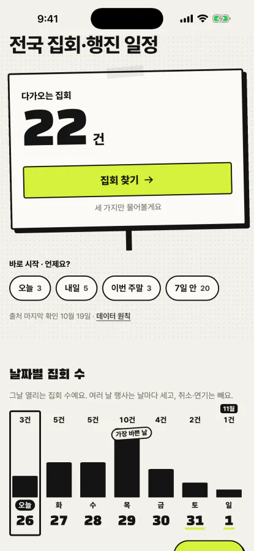
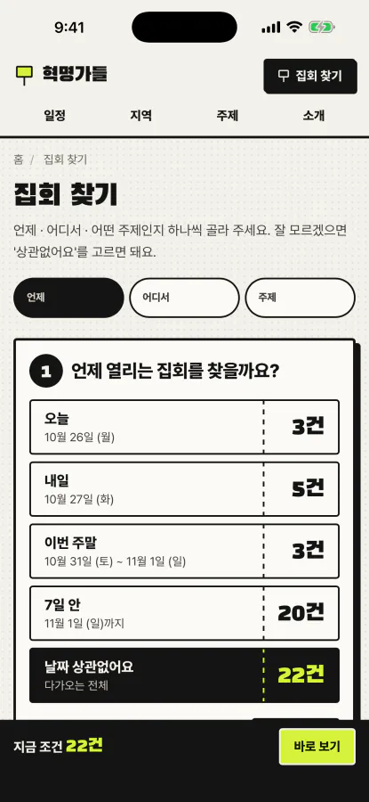
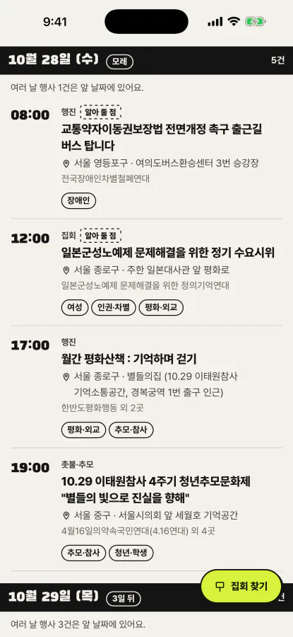
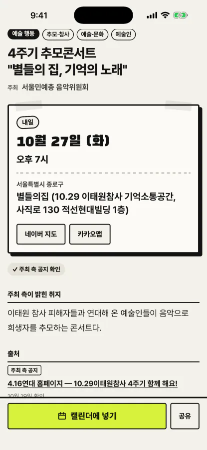

혁명가들
언제, 어디서, 누가, 무엇 때문에 모이는지 — 전국 집회·행진·문화제 일정을 지역과 주제별로 출처와 함께 정리합니다.
혁명가들 화면 미리 보기




혁명가들 소개
혁명가들은 전국에서 열리는 집회·행진·문화제 일정을 한곳에 모은, 정부·경찰기관과 관련 없는 민간 정보 서비스입니다. 다가오는 일정은 날짜순으로, 또는 17개 시·도별 지역과 ‘누가(노동자·장애인·성소수자·여성·농어민 등)’·‘무엇을(정치·기후·주거·교육·추모 등)’로 나눈 주제별로 볼 수 있습니다. 언제·어디서·어떤 주제인지 세 가지만 차례로 고르는 ‘집회 찾기’로 좁혀 볼 수도 있습니다.
여러 단체의 홈페이지와 SNS에 흩어진 일정을 한 번에 확인하려는 사람을 위해 만들었습니다. 로그인 없이 웹사이트에서 바로 볼 수 있고, iPhone 앱에서는 일정을 공유 시트로 보내거나 ‘캘린더에 넣기’로 하루 전 알림이 채워진 일정 추가 화면을 열 수 있습니다. 저장은 이용자가 직접 고르며, 앱은 기기의 캘린더를 읽지 않습니다.
경찰이 공개하는 집회 목록에는 일시·장소·신고 인원은 있어도 누가 무엇 때문에 모이는지는 없습니다. 그래서 주최 단체가 직접 낸 공지를 1차 근거로 제목·주최·취지를 채우고, 경찰 발표 목록은 일시·장소 대조에, 언론 보도는 사실 확인에 씁니다. 자료 조사는 AI(Claude)가 돕지만 사람이 출처를 대조한 항목만 공개하며, 확인하지 못한 시각·장소·인원은 추측하지 않고 비워 둡니다.
진보·보수 같은 성향은 나누지 않고, 주제 태그는 무엇에 관한 집회인지만 말합니다. 집회를 평가하거나 참여를 권하지 않으며, 개인 이름·연락처 없이 단체명만 싣습니다. 회원가입·댓글·광고가 없고 쿠키나 방문 통계 도구도 쓰지 않아 개인정보를 수집하지 않습니다.
주요 기능
- 17개 시·도 지역과 누가·무엇을 주제로 나눈 전국 일정
- 언제·어디서·주제를 차례로 고르는 집회 찾기
- 항목마다 주최 측 공지 등 출처와 확인 날짜 표시
- 캘린더에 넣기(하루 전 알림) · 네이버 지도·카카오맵 · 공유